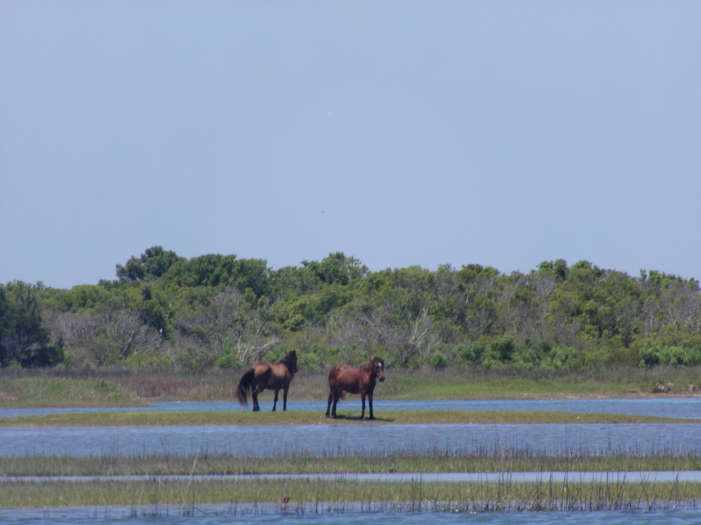
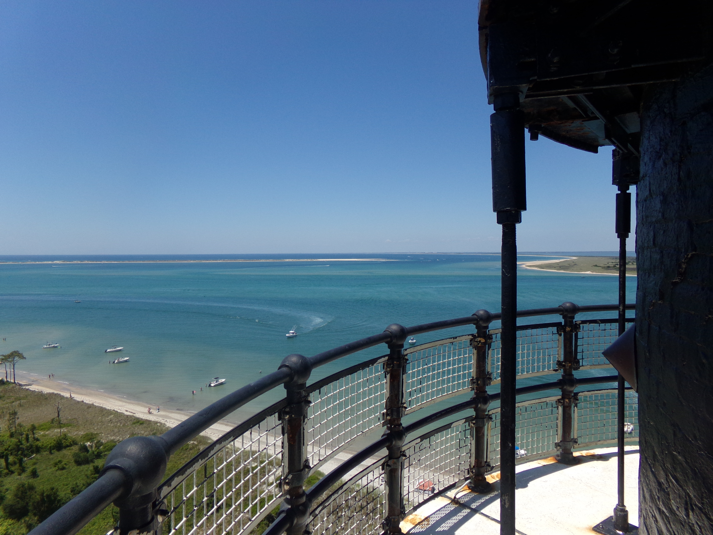

Cape Lookout Lighthouse
Built: 1859, Height: 163 ft. 207 Steps
Click the Images Below to View the History
A Beacon Built In The Wilderness With A Unique Diamond Pattern

The wild horses of Shackleford Banks near Cape Lookout. It is thought that their ancestors were horses from Spanish shipwrecks.
The strategic location of Cape Lookout lighthouse enabled a wide view of the surrounding coastline which was helpful in World War II for spotting ships and unfortunately, submarines. Originally, there was a large 1st order Fresnel Lens that sat in the lantern room. It was removed when the Cape Lookout Lighthouse was automated.
This lighthouse can be reached by ferry, and visitors can climb up to the top on certain days. While looking out over the ocean, one can imagine
what lurked below the surface several decades ago.
Originally, there was a large 1st order Fresnel Lens that sat in the lantern room. It was removed when the Cape Lookout Lighthouse was automated.
This lighthouse can be reached by ferry, and visitors can climb up to the top on certain days. While looking out over the ocean, one can imagine
what lurked below the surface several decades ago.